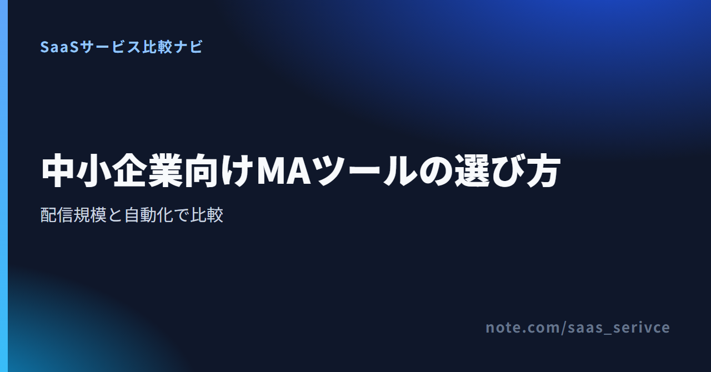

見込み客へのメール配信を自動化したくても、MAツールは料金の基準も機能の範囲もばらばらです。高機能な製品を選んだ結果、設定を担当できる人がいない。安いプランで始めたものの、連絡先や配信数が増えて予算を超える。少人数の会社では、こうした選び方のずれがそのまま運用停止につながります。
この記事で比べるMA本体は、海外製のBrevoとActiveCampaignです。Kartraは販売ファネル、WebinarJamはウェビナーという周辺用途に分け、日本から契約するときの通貨・請求・解約も整理しました。国産MAや大企業向け統合型MAまでを網羅する記事ではありません。4サービスはいずれも未契約で、記載内容は公式情報に基づきます。
無料枠の条件を優先するならBrevo、自動化1本あたりのアクション数でプランを選びたいならActiveCampaignが中心候補です。販売ページや決済までまとめるならKartra、ウェビナーを軸に見込み客を集めるならWebinarJamを別枠で検討します。
ActiveCampaignについては、Brevoより自動化が優れるという製品間比較ではなく、自動化1本あたりのアクション数をプラン選びの基準として扱います。
Brevoは期限を区切らないFreeがあり、配信量を抑えた検証から始められます。具体的な上限は個別紹介で整理します。
ActiveCampaignのStarterは、自動化1本につき5アクションまでです。6アクション以上が必要ならPlus以上を候補にし、カード不要のトライアルで設計を試します。無料プランはありません。
Brevoとの機能上の優劣は、同じシナリオを両製品で試すまで決められません。
Kartraは販売ページと決済を含む導線、WebinarJamはウェビナー開催が主目的です。MA本体と同じ順位で比べず、必要な役割で選びます。
Brevoは、1日の配信上限とオートメーション対象数を見て、Freeで検証できる規模か判断できます。
ActiveCampaignは、自動化に必要なアクション数を決めてからStarterと上位プランを比べるのが要点です。
一斉配信だけならメール配信サービス、商談管理だけならCRM・SFAで足ります。顧客の行動に合わせて継続的な育成シナリオを動かしたい段階で、MAを候補に加えます。
メール配信サービスはリストへの配信が中心です。MAでは、資料請求やメール内の操作をきっかけに、次の案内を変える設計まで扱います。
ニュースレターを送るだけなら、複雑なシナリオは不要です。自動化したい業務を一つに絞れなければ、メール配信サービスから始めます。
CRM・SFAは、顧客情報、案件、商談の進捗を営業側で管理する仕組みです。MAは、商談になる前の見込み客にどの情報をいつ届けるかを担います。
両方を使う場合は、「どの反応があれば営業へ渡すか」「顧客情報をどちらで更新するか」を決めます。重複データを誰が直すかも運用ルールに含めます。
販売ファネル型は集客ページから決済までをまとめ、ウェビナー型は開催登録、ライブ配信、開催後の案内をつなぎます。
日常のリード管理が必要ならBrevoやActiveCampaignを先に比較し、販売導線やウェビナーが主目的の場合だけ周辺サービスを加えます。
月額だけで決めず、連絡先数、配信数、自動化の上限、運用人数、日本からの契約条件を同じ順番で確認します。価格が安く見えても、課金単位が自社の増え方と合わなければ総額は逆転します。
「リストが増えたとき、料金は連絡先数と配信数のどちらを基準に上がるか」を確認します。半年後の登録数と、1人あたり月に送る通数も見積もります。
「1本のシナリオに何個の処理が必要か」を書き出します。ActiveCampaignのStarterは1つの自動化につき5アクションまでです。CRM連携は、顧客情報をどちら向きに同期するかまで確認します。
「設定、原稿、配信承認、結果確認を誰が担当するか」を決めます。BrevoのFreeは1ユーザーです。専任者がいない会社は、一つのシナリオを毎月改善する運用から始めます。
「英語の設定画面と窓口でも運用できるか」を考えます。日本語の紹介ページがあっても、管理画面やサポートまで日本語とは限りません。
「解約前に何を、どの形式で書き出すか」を契約前に確認します。連絡先、配信停止情報、同意記録、シナリオ、配信結果が移行対象です。
BrevoとActiveCampaignはMA候補として比べ、KartraとWebinarJamは目的が一致する場合だけ検討します。4つを同じ機能カテゴリとして順位付けすると、必要な機能と課金単位がかみ合いません。
Brevoは、配信量を抑えて自動化を試したい会社に向きます。Freeでも連絡先を最大100,000件まで登録できますが、送信は1日300通、オートメーション対象は2,000件までです。リストの保管数と、実際に動かせる配信・自動化の規模が同じではない点に注意してください。
有料のStarterは月$9（約1,422円）から、Standardは月$18（約2,844円）からです。配信量によって料金が変わり、Professionalは月$499（約78,842円）から、Enterpriseは個別見積もりになります。Freeアカウントは4か月に一度もログインしないと削除対象になるため、検証を止める期間にも管理が必要です。
無料枠では、毎日の配信量とオートメーション対象2,000件の範囲に収まるかを先に見ます。
ActiveCampaignはBrevoとの製品間比較ではなく、自動化1本のアクション数に応じたプラン選びを見ます。
ここでいう「細かく設計」は、ActiveCampaign内で自動化1本が6アクション以上になる場合を指し、Brevoとの優劣を意味しません。試用は14日間のトライアルで、無料で使い続けるプランはありません。カード登録が不要なので、契約前に担当者が設定画面と自動化の作り方を確認できます。
連絡先1,000件、USD、年払い表示では、Starterが月$15（約2,370円）、Plusが月$49（約7,742円）、Proが月$79（約12,482円）、Enterpriseが月$145（約22,910円）からです。Starterは1つの自動化につき5アクションまで、Plus以上は無制限なので、必要なアクション数で候補プランが変わります。
トライアルでは、自社で想定する1本のシナリオを作り、5アクションで収まるかを確かめます。
Kartraは、一般的なMAの代わりというより、販売ページと決済を含むファネルをまとめる候補です。最小のEssentialsは500連絡先、月10,000メールで、取引手数料が5%かかります。月額だけを見ず、販売件数に応じて増える手数料も総コストに含める必要があります。
無料プランはなく、無料トライアルが用意されています。ただし、公式ページ内で期間の案内が一致していないため、適用期間は申込画面で確認が必要です。月払いはEssentials $59（約9,322円）、Starter $119（約18,802円）、Growth $229（約36,182円）、Professional $549（約86,742円）です。
Kartraの費用は、販売ページ・決済・取引手数料まで合わせた総額で判断します。
WebinarJamは、ウェビナーを開催し、登録者への案内や開催後の導線を作るためのサービスです。ライブ配信を見込み客育成に加える補助候補であり、日常のメール配信全体を任せるMAとは役割が異なります。
14日間のトライアルは$1（約158円）です。有料プランは年払いの月額換算でStarter $39（約6,162円）、Basic $79（約12,482円）、Professional $229（約36,182円）、Enterprise $379（約59,882円）。Visa、Mastercard、American Expressで支払え、請求書はPDFで取得できます。
ウェビナーの開催が主目的なら、年払いであることを踏まえて契約期間の総額を確認します。
実質費用は、表示上の月額に加え、連絡先数、配信数、ユーザー数、自動化の上限、年払い条件で決まります。円換算は1ドル=158円で計算した目安で、実際の請求額は為替で変わります。
BrevoのFreeは、上限内なら期限を区切らずに使える無料プランです。ActiveCampaignにはカード不要の14日間トライアル、WebinarJamには14日間$1のトライアルがあります。Kartraにも無料トライアルがありますが、期間は申込画面で確認してください。いずれもトライアル終了後の継続利用は有料です。
トライアルでは、少数の連絡先で配信文を作り、自動化を一本動かし、結果確認まで終えます。
Kartraの年払いは月額換算でEssentials $52（約8,216円）、Starter $99（約15,642円）、Growth $189（約29,862円）、Professional $429（約67,782円）です。月払いとの差と、1年分を先に払える予算があるかを見ます。
Brevoでは、1日に送る通数とオートメーション対象数を基準にプランを選びます。
ActiveCampaignでは、連絡先数と自動化1本あたりのアクション数を同時に確認します。
Kartraでは、連絡先数、メール数、取引手数料、月払いと年払いの差をまとめて見ます。
WebinarJamでは、月額換算だけでなく契約期間の支払総額を確認します。
海外製MAは、日本語表示の有無だけでなく、サポート言語、請求通貨、日本発行カード、請求書の取得方法まで分けて確認します。契約画面を開く前に、経理と運用担当の両方が困らない条件をそろえます。
トライアル中に、実際の担当者が初期設定から配信結果の確認まで進められるかを見ます。
BrevoとKartra／WebinarJamはUSD建てです。ActiveCampaignは料金画面でUSD、BRL、CAD、AUD、EUR、GBPを選べます。Kartraは米国外で発行されたカードを利用できます。
BrevoとActiveCampaignはカード決済、WebinarJamはVisa、Mastercard、American Expressへの対応を案内しています。ただし、この3サービスの公式情報には日本発行カードの可否が明記されていません。契約前に、利用するカードの海外オンライン決済設定も確認します。
BrevoはMy planのInvoicesまたはBilling history、ActiveCampaignはPrimary AdminのBilling & UpgradeにあるInvoicesタブから、PDF請求書を表示・ダウンロードできます。KartraはBillingのMy payment history、WebinarJamは請求ポータルから請求書PDFを取得できます。
請求書を経費処理できることと、日本の適格請求書として扱えることは別です。海外サービス利用料の消費税やインボイスの扱いは、契約前に税理士に確認してください。
MAを切り替える前に、既存リスト、配信同意、次回請求日を確認します。各社のエクスポート対象や形式は契約前に確認し、必要なデータを保存してから旧サービスを解約します。
氏名や会社名などの必要項目を対応付け、重複連絡先と古いアドレスを整理します。配信停止情報も移し、送信ドメイン認証と社内アドレスでのテストを終えてから本配信へ切り替えます。
登録経路と同意時の説明を記録し、配信停止をMAと連携先の両方へ反映する流れを決めます。海外サービスへ個人情報を保存する条件は、利用規約とプライバシー関連の案内を踏まえて自社の運用手順に落とし込みます。
解約前には、次回請求日と契約期間を確認し、各社が書き出せる範囲で連絡先、配信停止情報、配信結果を保存します。返金保証は解約とは別で、対象条件を満たしたうえで申請が必要です。
書き出したファイルを開けるか、新サービスへ必要な項目が入ったかを確かめてから旧契約を閉じます。
無料で始められる範囲、少人数で回す条件、周辺サービスとの違いを整理します。どれを選ぶかは、最初に自動化したい業務で変わります。
この記事の候補では、期限を区切らない無料プランがあるのはBrevoです。ActiveCampaign、Kartra、WebinarJamは試用期間後の継続利用に料金がかかるため、無料運用と有料機能の試用を分けて考えます。
最初の業務を一つに絞り、原稿作成、配信停止対応、結果確認の時間を毎月確保できるなら運用候補になります。Brevo Freeは1ユーザーのため担当を分けにくく、今回の4サービスは管理画面またはサポートに英語が必要な場面があります。この条件を一人で担えるかを先に判断してください。
この記事ではMA本体と同列に扱いません。Kartraは販売ページ・決済まで含む販売ファネル型、WebinarJamはウェビナー開催とその前後の導線を担う補助候補です。継続的なメール配信とリード育成が中心なら、BrevoかActiveCampaignから比較します。
日本語の管理画面や国内窓口、円建ての請求を重視するなら、国産MAも比較対象に入ります。海外製は、英語での設定や外貨決済を受け入れられ、配信規模と自動化の条件に合う場合の候補です。機能数ではなく、担当者が継続して設定を直せるかで判断します。
無料枠の条件が合うならBrevo、必要なアクション数からプランを選ぶならActiveCampaignを比較の軸にします。販売ファネルが主目的ならKartra、ウェビナーが主目的ならWebinarJamを別枠で検討してください。
選定は次の3段階で進めます。
契約前には、日本語UI、サポート言語、日本発行カード、請求書、解約条件も確認します。料金は、自社の規模で選ぶプランと支払期間までそろえてから比べます。料金ページの最小額だけでは判断できません。
Brevoは、無料枠が自社の配信量に収まるかを試す候補です。
ActiveCampaignは、トライアルで必要な自動化を組み、候補プランを絞れます。
販売ページと決済まで一体化したい場合だけ、Kartraも候補に加えてください。
Kartraは、販売ページと決済を一体化したい場合に限って比較します。
ウェビナーを集客の中心に据える場合だけ、WebinarJamのプランを比べます。
WebinarJamは、ウェビナーを集客導線に組み込む場合に限って比較します。